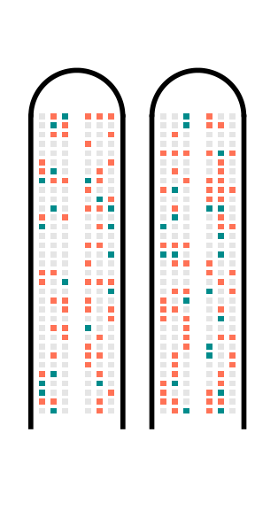

The goal of riskviewer is to provide a modern implementation of the “Risk Characterisation Theatre” originally proposed by Erik Rifkin and Edward Bouwer in their 2007 book “The illusion of certainty: Health Benefits and Risks”.
Why is this useful?
- uncertainty, embedded
- instinctive understanding of risk assessment figures based on real-world-scenarios
More context in the package vignette.
Preliminary notes
The package has been created as a quick experimentation of how it would be possible to implement the risk characterisation theatre. At this stage, the codebase is still messy and poorly documented. Customisation of parameters is largely untested, so anything differing significantly from the examples documented in the README and vignette will likely not work.
Common issues
The output really works only when exported at suitable sizes. For example, for a basic combination of two airplanes such as the first example in this readme, export with width set 12 and height set to 14 and you’ll get the expected result. E.g. based on the example below:
plane_1 + plane_2
ggplot2::ggsave(filename = "plane_combo.png",
plot = plane_1 + plane_2,
width = 12,
height = 14,
bg = "white")Beware of fonts: if you don’t have either “Roboto Condensed” or “Roboto Mono” installed and available in R, the output will probably just look completely wrong. You can either try with other fonts, or use default fonts: defaults fonts should work (or at least, they do on my computer), even if the look less satisfying.
In order to check if a given font is available, try:
library("extrafont")
#extrafont::font_import()
"Roboto Condensed" %in% fonts()
"Roboto Mono" %in% fonts()Installation
You can install riskviewer from GitHub with:
# install.packages("remotes")
remotes::install_github("EDJNet/riskviewer")Examples
At this stage, this package provides two formats for representing risk.
Airplane
library("riskviewer")
library("patchwork")
plane_1 <- rv_create_airplane(
risk_ratio = 0.1,
rows = 33,
title = "Scenario A",
font_family = "Roboto Condensed",
font_family_seats = "Roboto Mono"
)
plane_2 <- rv_create_airplane(
risk_ratio = 0.3,
rows = 33,
title = "Scenario B",
font_family = "Roboto Condensed",
font_family_seats = "Roboto Mono"
)
plane_1 + plane_2If more than one airplane is needed:
rv_create_airplane_combo(
risk_ratio = 0.01,
number_of_planes = 3,
font_family = "Roboto Condensed",
font_family_seats = "Roboto Mono", guides = NULL
)
rv_create_airplane_combo(
risk_ratio = 0.001,
number_of_planes = 5,
font_family = "Roboto Condensed",
font_family_seats = "Roboto Mono",
legend_position = "none",
ncol = 3,
nrow = 2, guides = NULL
)Or, using more than one risk consideration:
risk_ratio <- tibble::tribble(
~Risk, ~Ratio,
"Hospitalization", 0.3,
"Death", 0.1
)
combo_gg <- rv_create_airplane_combo(
risk_ratio = risk_ratio,
number_of_planes = 2,
font_family = "Roboto Condensed",
font_family_seats = "Roboto Mono",
legend_position = "bottom",
guides = "collect"
)
combo_gg +
patchwork::plot_annotation(
title = "Risk caused by x for people aged xx", caption = "Made with `riskviewer`, a tool by EDJNet",
theme = ggplot2::theme(plot.title = ggplot2::element_text(size = 24, family = "Roboto Condensed", hjust = 0.5))
)Compact airplane
combo_gg <- rv_create_airplane_combo(
risk_ratio = risk_ratio,
number_of_planes = 2,
font_family = "Roboto Condensed",
font_family_seats = "Roboto Mono",
legend_position = "bottom",
guides = "collect",
compact = TRUE
)
combo_gg
#> Warning in structure(in_domain, pos = match(in_domain, breaks)): Calling 'structure(NULL, *)' is deprecated, as NULL cannot have attributes.
#> Consider 'structure(list(), *)' instead.
#> Warning in structure(in_domain, pos = match(in_domain, breaks)): Calling 'structure(NULL, *)' is deprecated, as NULL cannot have attributes.
#> Consider 'structure(list(), *)' instead.
The compact format makes it easier to have many planes:
rv_create_airplane_combo(
risk_ratio = 0.002,
number_of_planes = 10,
compact = TRUE,
font_family = "Roboto Condensed",
legend_position = "none",
ncol = 5,
nrow = 2,
guides = NULL
) +
patchwork::plot_annotation(
title = "This risk hits about 2 people out of one thousand", caption = "Made with `riskviewer`, a tool by EDJNet",
theme = ggplot2::theme(plot.title = ggplot2::element_text(size = 16, family = "Roboto Condensed", hjust = 0.5))
)
#> Warning in structure(in_domain, pos = match(in_domain, breaks)): Calling 'structure(NULL, *)' is deprecated, as NULL cannot have attributes.
#> Consider 'structure(list(), *)' instead.
#> Warning in structure(in_domain, pos = match(in_domain, breaks)): Calling 'structure(NULL, *)' is deprecated, as NULL cannot have attributes.
#> Consider 'structure(list(), *)' instead.
#> Warning in structure(in_domain, pos = match(in_domain, breaks)): Calling 'structure(NULL, *)' is deprecated, as NULL cannot have attributes.
#> Consider 'structure(list(), *)' instead.
#> Warning in structure(in_domain, pos = match(in_domain, breaks)): Calling 'structure(NULL, *)' is deprecated, as NULL cannot have attributes.
#> Consider 'structure(list(), *)' instead.
#> Warning in structure(in_domain, pos = match(in_domain, breaks)): Calling 'structure(NULL, *)' is deprecated, as NULL cannot have attributes.
#> Consider 'structure(list(), *)' instead.
#> Warning in structure(in_domain, pos = match(in_domain, breaks)): Calling 'structure(NULL, *)' is deprecated, as NULL cannot have attributes.
#> Consider 'structure(list(), *)' instead.
#> Warning in structure(in_domain, pos = match(in_domain, breaks)): Calling 'structure(NULL, *)' is deprecated, as NULL cannot have attributes.
#> Consider 'structure(list(), *)' instead.
#> Warning in structure(in_domain, pos = match(in_domain, breaks)): Calling 'structure(NULL, *)' is deprecated, as NULL cannot have attributes.
#> Consider 'structure(list(), *)' instead.
#> Warning in structure(in_domain, pos = match(in_domain, breaks)): Calling 'structure(NULL, *)' is deprecated, as NULL cannot have attributes.
#> Consider 'structure(list(), *)' instead.
#> Warning in structure(in_domain, pos = match(in_domain, breaks)): Calling 'structure(NULL, *)' is deprecated, as NULL cannot have attributes.
#> Consider 'structure(list(), *)' instead.Animate transition between different risk scenarios
(currently broken)
gg_airplane_animated <- tibble::tribble(
~Risk, ~Ratio,
"Age 20", 0.009,
"Age 30", 0.027,
"Age 40", 0.048,
"Age 50", 0.085,
"Age 60", 0.155,
"Age 70", 0.244,
"Age 80", 0.317
) %>%
rv_create_airplane_animation(title = "Risk 1")
gganimate::animate(
plot = gg_airplane_animated,
# renderer = gganimate::ffmpeg_renderer(),
height = 8,
width = 2,
units = "in",
res = 150
)Arena
It is possible to create a ggplot object that looks like the seatmap of an arena, but this implies using two different projections, combining the graph, and leaving the top half empty.
library("riskviewer")
rv_create_arena(
ratio = 0.05,
title = "The risk you face",
ggplot = FALSE,
quality = "low"
)
library("riskviewer")
rv_create_arena(ratio = 0.3, ggplot = TRUE)Combine more
graphs <- list(
rv_create_arena(ratio = 0.1, title = "Scenario A", ggplot = TRUE),
rv_create_arena(ratio = 0.8, title = "Scenario B", ggplot = TRUE)
)
rv_img(plot = graphs, stack = TRUE, quality = "medium")
rv_img(plot = graphs, stack = FALSE, quality = "medium")Export in other formats
ggplot2::ggsave(
filename = "risk_arena.svg",
plot = rv_create_arena(ratio = 0.1, ggplot = TRUE),
width = 10,
height = 10,
units = "in"
)